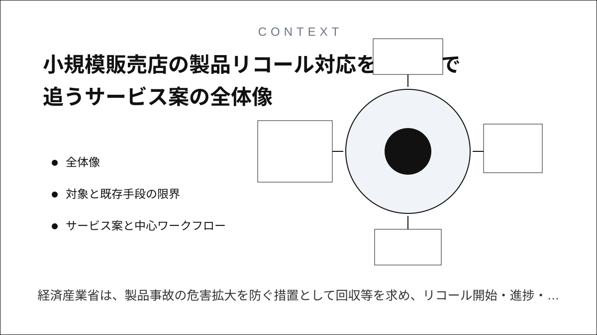
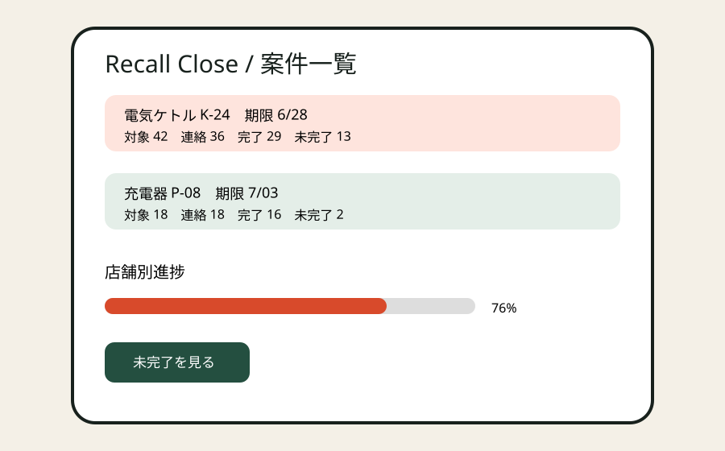
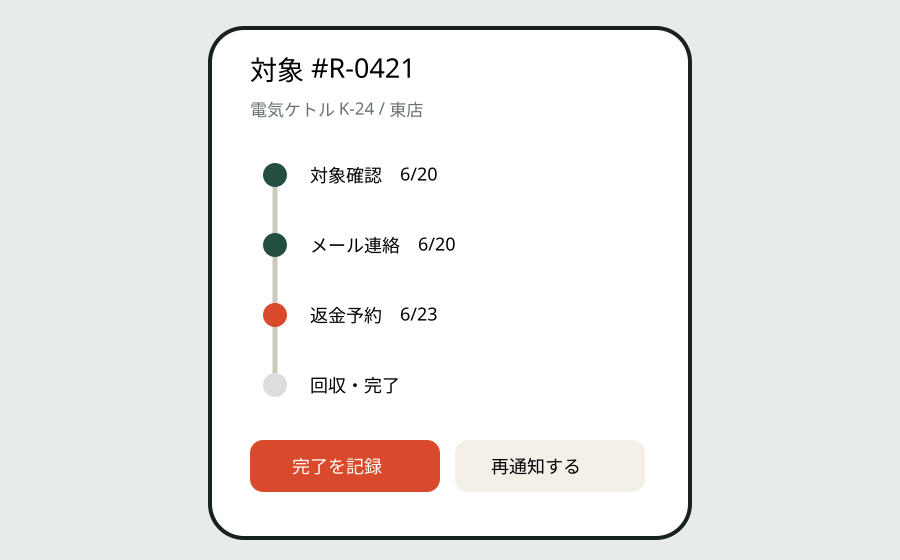
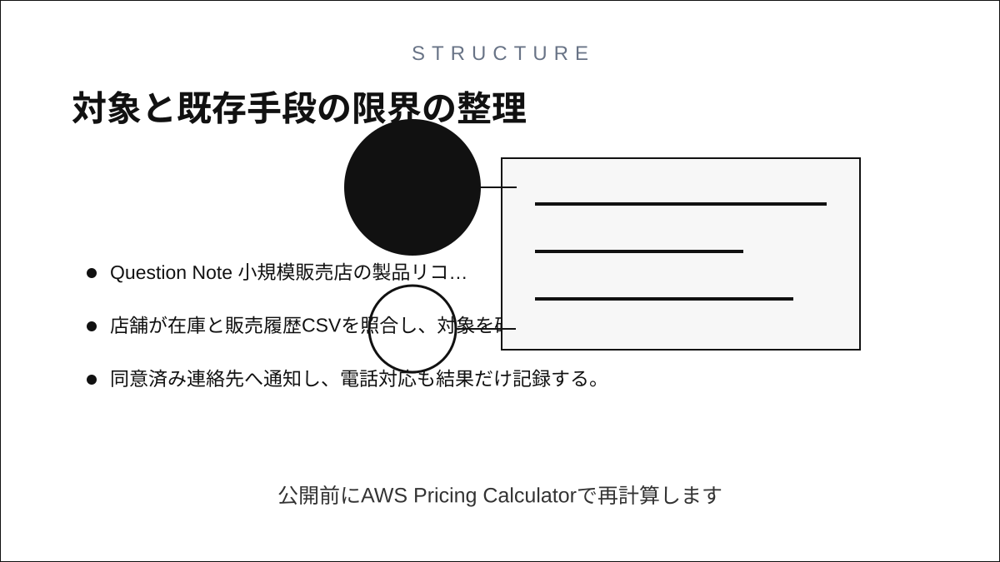
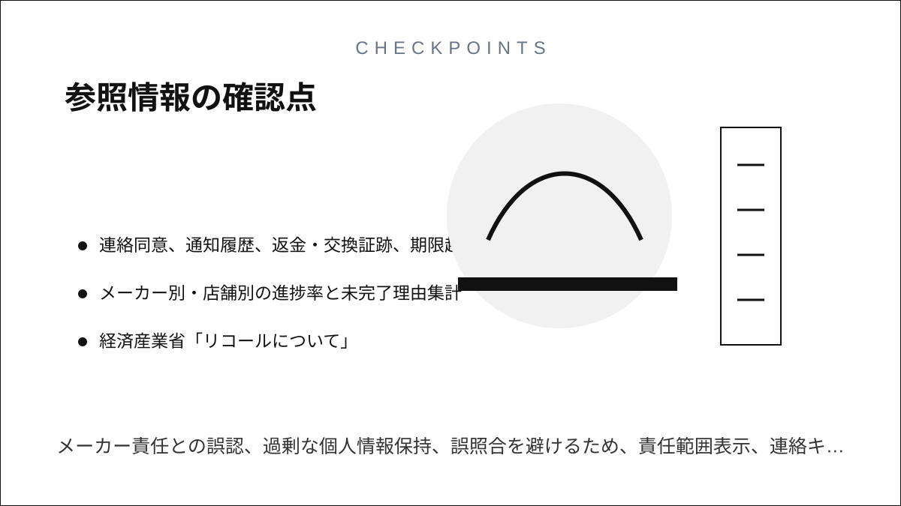

Question Note
小規模販売店の製品リコール対応を完了まで追うサービス案



全体像
経済産業省は、製品事故の危害拡大を防ぐ措置として回収等を求め、リコール開始・進捗・終了時の報告様式を公開しています。小規模販売店ではメーカー通知、POS抽出、購入者連絡、店頭返金、未回収理由がメールと表計算に分かれ、対象者が残っても追跡が止まりがちです。

メーカーの責任を代替せず、販売店が担う対象在庫の隔離 → 購入者への連絡 → 返金・交換 → 未回収の再通知 → 完了集計を一案件で閉じます。
対象と既存手段の限界
| 利用者 | 課題 | 既存手段の限界 |
|---|---|---|
| 地域家電店・雑貨店 | 型式と販売履歴の照合 | メーカーPDFとPOS抽出結果が別管理 |
| 本部・店長 | 店舗ごとの進捗把握 | 電話・メールでは分母と未完了理由が残らない |
| 購入者対応担当 | 再通知と証跡 | 個人メモでは担当交代と監査に耐えない |
紙は同時更新できず、電話は検索できず、チャットは対象製品と購入者の状態を集計できず、表計算は権限・履歴・添付証跡・自動再通知が弱い点が不足です。
サービス案と中心ワークフロー
- メーカー通知から対象型式、ロット、対応方法を登録する。
- 店舗が在庫と販売履歴CSVを照合し、対象を確定する。
- 同意済み連絡先へ通知し、電話対応も結果だけ記録する。
- 返金・交換・回収・廃棄証明を残し、未完了を期限順に再通知する。
- 店舗別の対象数、完了数、未回収理由を報告用CSVへ出す。
100万円規模の収益
地域チェーン、共同仕入れ組織、中小販売店へ直接営業し、16組織 × 月額5,000円 × 12か月 + 初期設定60,000円 = 売上1,020,000円。全国TAMではなく、初年度に紹介で届く40組織中16組織を想定します。
システム要件
- 組織・店舗・役割別認証、操作監査、個人情報の最小保持
- 型式・JAN・ロット・購入日の照合、重複排除、CSV入出力
- 連絡同意、通知履歴、返金・交換証跡、期限超過アラート
- メーカー別・店舗別の進捗率と未完了理由集計
AWSシステム要件と支出
東京リージョン、無料枠・クレジット除外、1 USD = 155円の予算概算です。公開前にAWS Pricing Calculatorで再計算します。
| AWS | 用途 | 想定 | 月額 | 年額 |
|---|---|---|---|---|
| S3 + CloudFront | Web配信・証跡添付 | 20GB、月5万配信 | 1,200円 | 14,400円 |
| Cognito | 組織・店舗・担当者認証 | 300 MAU | 800円 | 9,600円 |
| API Gateway | 案件・購入者・進捗API | 月20万req | 700円 | 8,400円 |
| Lambda | CSV照合、期限判定、集計 | 月20万実行 | 1,000円 | 12,000円 |
| DynamoDB | 組織、店舗、リコール案件、対象SKU、購入者連絡キー、対応状態、期限、返金・交換証跡、監査履歴 | 5万件、on-demand | 1,800円 | 21,600円 |
| SES | 初回・再通知 | 月5,000通 | 900円 | 10,800円 |
| CloudWatch | エラー・監査ログ | 月5GB | 1,200円 | 14,400円 |
| AWS Backup | 設定・エクスポート保全 | 月20GB | 700円 | 8,400円 |
| AWS Budgets | 予算超過通知 | 2予算 | 200円 | 2,400円 |
| Route 53 | 独自ドメインDNS | 1 zone | 100円 | 1,200円 |
| 合計 | AWS利用料 | 8,600円 | 103,200円 | |
開発、人員、利益
AIでCRUD、CSVマッピング、通知テンプレート、E2Eテストの初稿を作り、要件2週、試作2週、本実装4週、実証・修正3週の計11週。1人の運営者が営業、導入、一次サポートを担当し、製品安全・個人情報レビューを各10万円、デザインと脆弱性診断を各8万円で外注します。
初年度支出はAWS 103,200円、ドメイン3,000円、外注360,000円、営業・運営180,000円、予備費80,000円の計726,200円。売上 - 支出 = 利益より、1,020,000円 - 726,200円 = 293,800円です。
最初の実証とリスク
2店舗で過去の1案件を匿名データで再現し、対象確定時間、連絡漏れ、完了率集計時間を比較します。メーカー責任との誤認、過剰な個人情報保持、誤照合を避けるため、責任範囲表示、連絡キーの暗号化・削除期限、二者確認を必須にします。
参照情報
